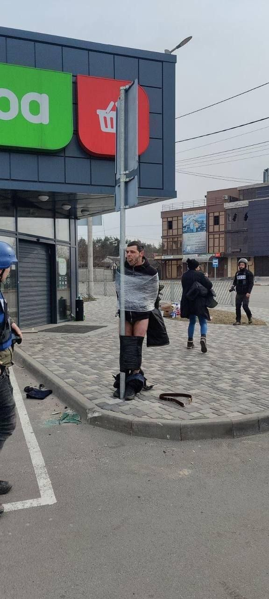
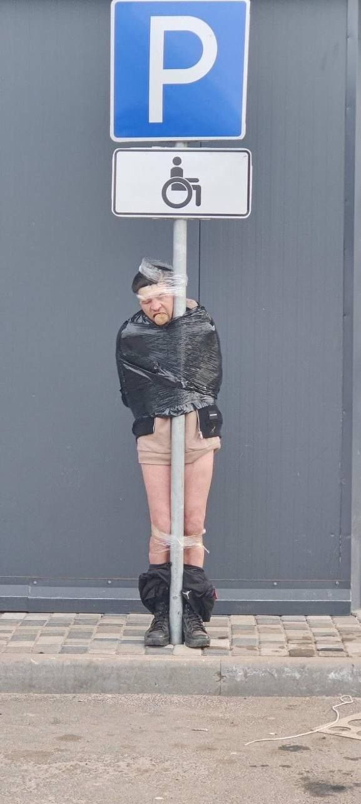

13/3
[12:51] Kyiv:


[12:51] Kyiv: good times
[13:08] me: Hide and seek champions
[11:55] Kyiv: man
[11:55] Kyiv: really hope china doesn’t start supporting russia
[14:31] me: Feel like its too late to start supporting russia
[15:38] me: i mean we didn’t expect russia to take this many losses
[15:38] me: theyre fucking up the war
[15:38] me: doesn’t make sense for other people to help them anymore
[00:13] me: i wonder if anyone actually predicted this was how the war was going to war
[00:13] me: every step of this journey is like
[00:14] me: too unrealistic bruh
[00:26] Kyiv: our presidential advisor predicted this war and the way it was going to happen three years ago
[00:26] Kyiv: he also predicted donbas and crimea years before anyone even thought about it
[00:27] Kyiv: there’s also a russian journalist who in 2021 described this war in great detail and got 90% of it right.
[00:28] Kyiv: i guess people who really know what’s going on aren’t really surprised by the way things are today
[00:29] me: Man
[00:29] me: Guess if you know you know
[00:29] me: If you don’t know you’re fucked
[00:30] me: Can you link me the journalist
[00:37] Kyiv: https://youtu.be/Ia8RFaeIqEk
[00:38] Kyiv: there are no english subs so i don’t know if it’s useful at all
[00:39] me: it’s fine i’m extremely fluent in ukrainian and russian
[00:39] me: i know how to say
[00:39] me: я не маю їжі
[00:39] Kyiv: that’s good
[00:40] Kyiv: u can qualify for a refugee
[00:40] Kyiv: я не маю їжі
[00:40] Kyiv: я не маю де спати
[00:41] Kyiv: я хочу вбивати росіян
[00:41] Kyiv: three things every ukrainian refugee says
[00:42] me: but what about
[00:43] me: я хочу вбивати себе
[00:44] Kyiv: я хочу завершити своє нікчемне існування
[01:34] Kyiv:
[01:34] Kyiv: our presidential adviser
[01:35] Kyiv: he has a very calming voice. he talks about russian casualties as if he’s reading a lullaby
[01:36] me: does х and г make the same sound in ukrainian
[01:36] Kyiv: no
[01:36] me: fk
[01:37] Kyiv: х is like h in have and г is like g in game but a bit softer
[01:37] me: but г is dufferent from russian right
[01:37] me: because i’m learning the phonetics and like
[01:37] Kyiv: in ukrainian there is also ґ which is the same as russian г
[01:37] me: г and е sound kinda different
[01:37] me: oh that makes sense
[01:38] me: is it like the
[01:38] me: gh sound from mongolian
[01:38] Kyiv: i dont know
[01:38] Kyiv: maybe
[01:38] me: now that i think about it
[01:38] me: you dont speak mongolian
[01:38] Kyiv: how does г sound like e tho
[01:39] me: now they dont
[01:39] me: it’s like
[01:39] me: e in ukrainian sounds different from e in russian
[01:39] me: it’s like
[01:39] me: less of the y in ye
[01:39] me: fuck am i saying
[01:40] Kyiv: well
[01:40] Kyiv: in ukrainian there is also є which is russian е
[01:40] Kyiv: and ukrainian е is russian э
[01:40] Kyiv: good luck
[01:41] Kyiv: it’s same
[01:41] Kyiv: but different
[01:41] me: yea i was like
[01:41] me: well i already know some russian this will be ezpz
[01:41] me: but then it was
[01:41] me: harder than just starting from scratch
[01:41] me: because instead of not knowing anything
[01:41] me: you just know everything wrong
[01:42] me: it’s like
[01:42] me: imagine going into a fight
[01:43] me: and instead of just not knowing how to fight
[01:43] me: you practiced hitting the other person’s fist with your face for like 20 years
[01:43] me: so your muscle memory is just
[01:43] me: fucking sudoku
[01:44] Kyiv: 💪🥲
[06:48] Kyiv: bruh
[06:48] Kyiv: i found a ukrainian ninja
[06:48] Kyiv:
[06:49] Kyiv: an elite warrior
[16:50] me: вiн хоче вбивати росіян